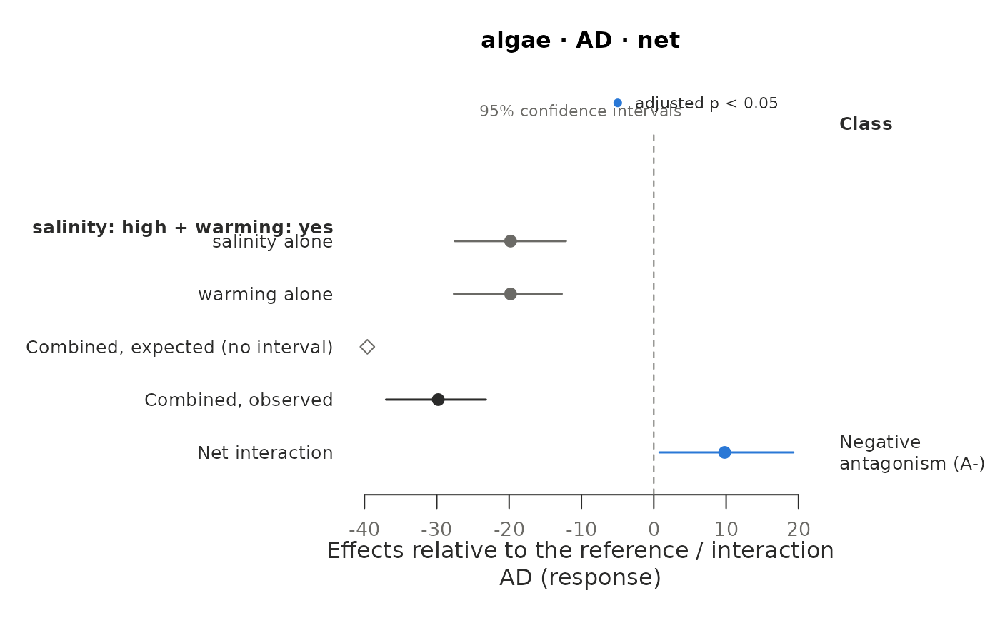
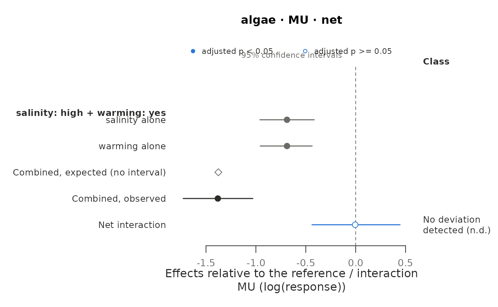
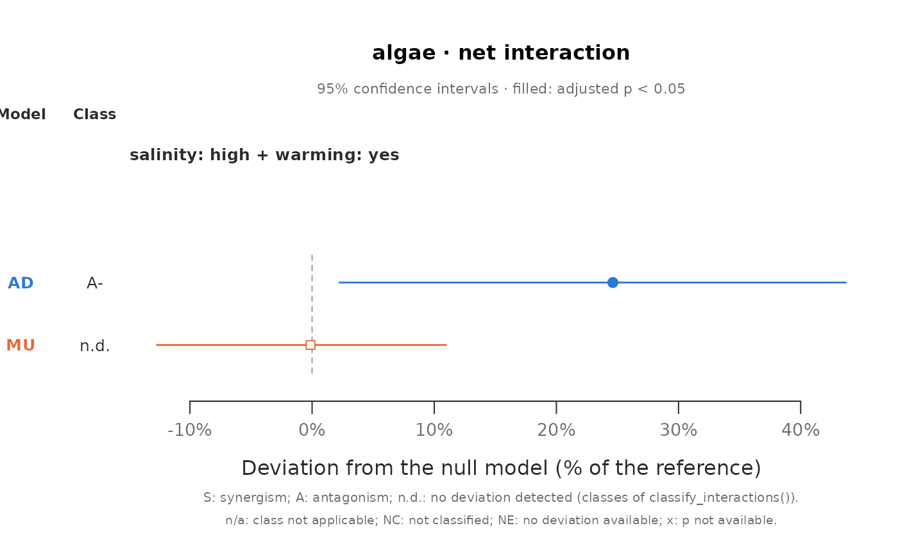

Draws the interactions estimated by estimate_interactions() in one of
four ways, chosen with type:
Usage
# S3 method for class 'must_interactions'
plot(
x,
type = "effects",
response = NULL,
null_model = NULL,
estimand = "net",
time = NULL,
set_id = NULL,
context = NULL,
scale = "model",
group_by = "none",
classes = "auto",
alpha = 0.05,
labels = NULL,
stressor_labels = NULL,
label_style = "full",
label_width = 42,
per_page = NULL,
xlim = NULL,
ylim = NULL,
ylim_interaction = NULL,
main = NULL,
...
)Arguments
- x
A
must_interactionsobject fromestimate_interactions().- type
What to draw:
"effects"(default),"interactions","models"or"time"(see Description).- response
Name of the response to plot. Default: the first one.
- null_model
Null model to plot, among those estimated. Default: the first one estimated (
type = "effects"and"time"need the effects of the stressors alone, which the dominance model,"DO", does not give, so they skip it). Fortype = "models", the null models to compare, in the order given; default: all those estimated.- estimand
"net"(default) or"pure"(sets of three or more stressors only).type = "time"draws net interactions.- time
Sampling times to plot (as text, including
"overall"). Default: all.type = "time"draws the numeric times and leaves out"overall".- set_id, context
Sets (
set_id, as in the estimates) andbygroups (context, as in the estimates, e.g."species=T. gravida") to plot. Default: all.- scale
For
type = "interactions":"model"(default; the scale of the null model, on which the tests are done) or"relative"(observed minus expected, relative to the reference cell; comparable between null models).- group_by
For
type = "interactions":"none"(default; one label per row),"set","time"or"context", to write what the rows share once, as a header above them.- classes
How the class of each interaction is written:
"auto"(default: names when the plot has a single interaction, codes otherwise),"names"(type = "effects"and"interactions"only),"codes"or"none". The codes areS+,S-,A+andA-for the classes+S,-S,+Aand-Aofclassify_interactions()(synergism or antagonism, positive or negative),n.d.for no deviation detected (classAD),n/awhen must does not classify the interaction (dominance model and pure interactions) andNCwhen it could not be classified.- alpha
Significance level applied to the adjusted p-values (filled points) and passed to
classify_interactions(). Default 0.05.- labels
Optional named character vector with labels for the sets, named by
set_id(for examplec(S01 = "High salinity + warming")). Default: the levels of the stressors of each set.- stressor_labels
Optional named character vector with the names to show for the stressors, named by stressor (for example
c(temperature = "Warming")).- label_style
How sets are labelled by default:
"full"(default;"salinity: high + warming: yes"),"short"(stressor names cut to four letters) or"levels"(levels only: shorter, but ambiguous when stressors share level names).- label_width
Maximum number of characters per line of the labels in the margin of
type = "effects"and"interactions"; longer labels are wrapped. Default 42.- per_page
Number of blocks per page: interactions (each with its effects) for
type = "effects", rows or groups of rows under a header fortype = "interactions", and sets at one sampling time fortype = "models"(default 4). By default,type = "effects"and"interactions"put on each page as many blocks as fit in the height of the device, up to 4 for"effects".type = "time"draws one set per page. Pages are drawn one after the other; in an interactive session R asks before each new one.- xlim, ylim, ylim_interaction
Limits of the axis of the estimates:
xlimfortype = "effects","interactions"and"models"(as proportions for"models":c(-0.5, 0.5)is -50% to 50%), andylimandylim_interactionfor the top and bottom panels oftype = "time". By default the limits cover the estimates and their intervals; fortype = "models", intervals that reach beyond the estimates by more than the range of the estimates are cut. Cut intervals, and estimates outside given limits, end in an arrow.- main
Title. Default: the response, the null model and the estimand.
- ...
Not used.
Value
Invisibly, a data frame with one row per estimate drawn and
columns response, context, time, set_id, null_model,
estimand, component ("single", "expected", "combined" or
"interaction"), stressor, estimate, lower, upper (the values
drawn: relative deviations for type = "models" and scale = "relative"), p_adjusted, status, class_code (for interactions)
and page.
Details
"effects"(default): for each interaction, the effect of each of its stressors alone, the combined effect expected under the null model (net interactions only), the combined effect observed and the interaction, all on the scale of the null model, with the class of the interaction at the right (seeclassify_interactions()). It shows how the interaction arises: it is the distance between the expected and the observed combined effects."interactions": the interactions alone, one row each, on the scale of the null model or as relative deviations (scale), optionally grouped under headers (group_by): an overview of many sets and times."models": the net or pure interaction under each null model, as a deviation relative to the reference cell (the same quantity for every null model, in percent), with its class: whether the conclusion depends on the null model (seecompare_null_models())."time": for designs with sampling times, one figure per set with the effects of the stressors alone and the expected and observed combined effects over time (top) and the net interaction and its class at each time (bottom).
Filled points are estimates whose adjusted p-value is below alpha, open
points the rest; a diamond (type = "effects" and "interactions") or a
cross (type = "models" and "time") marks an estimate without p-value.
Interactions or effects tested from a treatment combination with only
zeros (status = "boundary") have no interval and are drawn as
triangles in type = "effects" and "interactions"; infinite estimates
(MU with a combination of zeros) are drawn as an arrow at the edge.
Estimates that could not be computed, or that the null model does not
define, are marked NE.
The effects of the stressors alone and the combined effects are on the
scale of the null model and relative to the reference cell of the set
(the control, or the background levels with background = "all" in
describe_design()): differences in response units for AD, differences
of logarithms for MU and responses relative to the reference for BL, SAM
and CA. The combined effect expected under the null model is the
observed combined effect minus the net interaction; its interval is not
computed, so it is drawn without one.
What the rows of a page share (the by group, the sampling time) is
written under the title rather than in every label.
See also
classify_interactions() for the classes and
compare_null_models() for the agreement between null models.
Examples
jars <- expand.grid(
salinity = c("ambient", "high"),
warming = c("no", "yes"),
replicate = 1:5,
stringsAsFactors = FALSE
)
jars$jar <- seq_len(nrow(jars))
mu <- 40 * ifelse(jars$salinity == "high", 0.5, 1) *
ifelse(jars$warming == "yes", 0.5, 1)
jars$algae <- stats::qpois(c(0.2, 0.35, 0.5, 0.65, 0.8)[jars$replicate], mu)
design <- describe_design(jars, c("salinity", "warming"),
control = c(salinity = "ambient", warming = "no"), unit = "jar")
fits <- fit_responses(jars, "algae", design, residual_checks = FALSE,
seed = 1, quiet = TRUE)
est <- estimate_interactions(fits, null_models = c("AD", "MU"), n_sim = 2000, seed = 1)
# How the interaction arises under each null model
plot(est)

plot(est, null_model = "MU")

# Both null models on the same axis
plot(est, type = "models")
